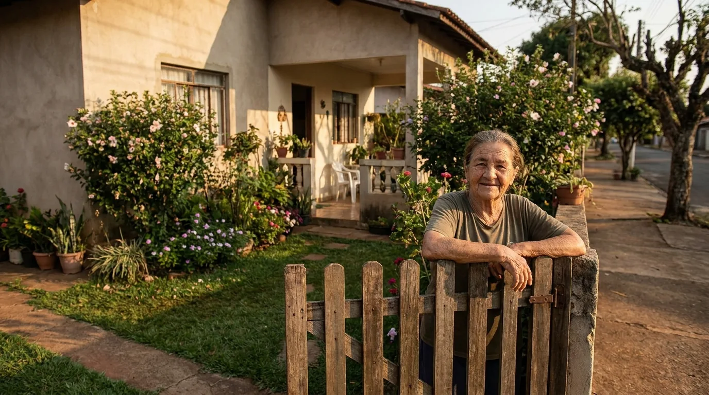
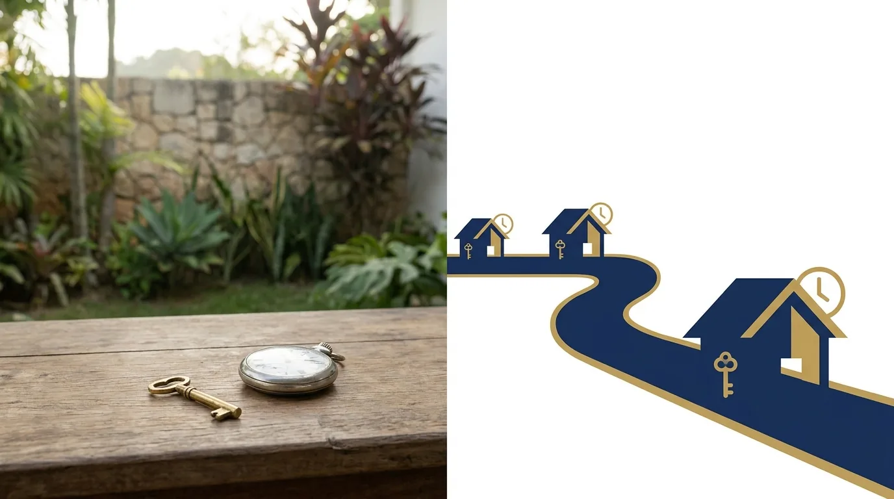

Usucapião: Tipos, Requisitos e Como Funciona

Milhões de brasileiros moram em imóveis que não estão em seu nome. Compraram por contrato de gaveta, herdaram a posse dos pais, ocuparam um terreno há décadas, construíram, pagaram IPTU, criaram os filhos ali. Na prática, são donos. No papel, não são, e essa diferença cobra seu preço na hora de vender, financiar, regularizar ou deixar de herança.
A usucapião existe exatamente para fechar essa distância entre a vida real e o registro. Ela transforma a posse prolongada em propriedade plena, com registro em seu nome na matrícula do imóvel, que é a espécie de certidão de nascimento do bem no cartório de registro de imóveis. Não é favor nem brecha: é um instituto clássico do direito, previsto em detalhes no Código Civil e na Constituição.
Este guia explica o que é a usucapião, os tipos e prazos de cada modalidade, os requisitos que a posse precisa cumprir e os dois caminhos para conquistar a propriedade, o judicial e o extrajudicial em cartório. Ao final, você vai saber identificar se o seu caso tem os elementos e por onde começar.
O que é usucapião e por que ela existe
Usucapião é o modo de adquirir a propriedade de um bem pelo exercício da posse prolongada, contínua e sem oposição, nas condições que a lei define. O fundamento é social: a propriedade deve cumprir uma função, e o ordenamento premia quem usa, cuida e dá destino ao bem, em vez de proteger indefinidamente o dono que o abandonou.
O Código Civil disciplina as modalidades principais, e a Constituição acrescenta as formas especiais urbana e rural. Apesar da fama de "jeito de tomar terreno", a usucapião é o oposto da informalidade: é um procedimento rigoroso, com requisitos objetivos, provas robustas e participação de registrador ou juiz.
Duas balizas valem para todos os tipos:
- Bens públicos não se adquirem por usucapião. Terreno da União, do estado ou do município está fora, por vedação constitucional expressa, não importa por quanto tempo dure a ocupação.
- A posse precisa ser exercida com ânimo de dono. Quem ocupa o imóvel em nome de outra pessoa, como inquilino, caseiro ou quem recebeu o imóvel emprestado, não conta prazo de usucapião, porque reconhece que o dono é outro.
Atenção: usucapião não é disputa contra "o governo" nem atalho para invasão recente. É o reconhecimento jurídico de uma situação consolidada há anos, com prova documental e testemunhal. Quanto mais organizada a história da posse, mais rápido o caminho.
Os tipos de usucapião e os prazos de cada um
A modalidade certa depende do tempo de posse, do tamanho e do uso do imóvel, e de detalhes como a existência de um documento de compra. A tabela resume o mapa:
| Modalidade | Prazo | Principais condições |
|---|---|---|
| Extraordinária | 15 anos | Sem necessidade de documento nem boa-fé; cai para 10 anos se o possuidor fez do imóvel sua moradia habitual ou nele realizou obras e serviços de caráter produtivo |
| Ordinária | 10 anos | Justo título (documento que aparenta transferir a propriedade) e boa-fé; cai para 5 anos para quem comprou e registrou o imóvel, teve o registro cancelado depois e mesmo assim seguiu morando ou investindo nele |
| Especial urbana | 5 anos | Imóvel urbano de até 250 m², usado para moradia própria ou da família, sem oposição, e o possuidor não pode ter outro imóvel |
| Especial rural | 5 anos | Área rural de até 50 hectares, tornada produtiva pelo trabalho, com moradia, e o possuidor não pode ter outro imóvel |
| Familiar (por abandono do lar) | 2 anos | Imóvel urbano de até 250 m² cuja propriedade era dividida com o ex-cônjuge ou ex-companheiro que abandonou o lar; quem ficou precisa de posse exclusiva, para moradia, e não pode ter outro imóvel |
| Coletiva | 5 anos | Núcleos urbanos informais sem oposição há mais de 5 anos, com área média de até 250 m² por possuidor e possuidores sem outro imóvel (Estatuto da Cidade) |
Três leituras práticas dessa tabela.
A extraordinária é a modalidade "coringa": não exige papel nenhum nem boa-fé, só tempo e posse exercida como dono, sem oposição. É o caminho típico de quem ocupa há décadas sem documento algum.
A ordinária premia quem tem um documento que parecia válido, como um contrato de compra e venda de quem não era o verdadeiro dono, e agiu de boa-fé. O papel encurta o prazo.
As especiais são as mais rápidas e as mais restritivas: cinco anos, mas só para imóveis pequenos, com moradia efetiva, e para quem não tem outro imóvel. A familiar, de dois anos, é a mais curta de todas e resolve um drama comum: o imóvel que pertencia ao casal, o cônjuge que saiu de casa, sumiu, e o outro que ficou pagando tudo sozinho passa a poder ficar com a metade abandonada.

Os requisitos da posse: o que o juiz e o cartório examinam
Todos os tipos de usucapião giram em torno da qualidade da posse. Quatro características precisam aparecer, e é sobre elas que as provas se constroem.
Posse com ânimo de dono. O possuidor age como proprietário: mora ou explora o imóvel, faz obras, paga os tributos, decide sobre o bem. É a tradução prática da segunda baliza vista acima, e alcança situações menos óbvias: o filho que mora de favor em imóvel dos pais e o sócio que usa imóvel da empresa também possuem em nome alheio, e por isso não contam prazo.
Posse mansa e pacífica. Sem oposição real do proprietário durante o prazo. Se o dono ajuizou ação de reintegração ou tomou medidas concretas para reaver o bem, a contagem se interrompe. Reclamação de vizinho ou conversa de bar não é oposição; processo judicial é.
Posse contínua. Sem abandono nem interrupções relevantes ao longo do período. A lei permite somar a posse dos antecessores: quem comprou a posse do ocupante anterior, por contrato de gaveta, pode somar o tempo dele ao seu, desde que as posses se encadeiem sem quebra.
Posse atual e provada. O tempo se comprova com documentos e testemunhas: contas de luz e água no nome, carnês de IPTU, fotos datadas, notas de material de construção, declarações de vizinhos antigos, cadastro na prefeitura.
Um esclarecimento que evita frustração: pagar IPTU, sozinho, não gera usucapião. O imposto é indício forte de ânimo de dono, mas o que adquire a propriedade é o conjunto: tempo, posse com as características acima e os requisitos da modalidade.
Outro ponto que gera confusão é a usucapião entre herdeiros do mesmo imóvel. Ela é possível, mas exige situação excepcional, em que o herdeiro prova ter exercido posse exclusiva, como dono único, excluindo os demais por todo o prazo. É bem diferente de simplesmente morar no imóvel da família.
Judicial ou extrajudicial: os dois caminhos
Desde 2015, a usucapião pode ser reconhecida sem processo, direto no cartório de registro de imóveis. A via extrajudicial mudou o jogo para os casos bem documentados.
| Ponto | Via judicial | Via extrajudicial (cartório) |
|---|---|---|
| Onde corre | Vara cível, com sentença de juiz | Cartório de registro de imóveis da localização do imóvel |
| Tempo típico | Anos, conforme a comarca e a complexidade | Meses, quando a documentação está completa |
| Quando é indicada | Casos com conflito, contestação ou provas difíceis | Casos consensuais, com documentação organizada |
| Peças centrais | Petição inicial, provas, perícia se necessário | Ata notarial do tabelião, planta e memorial descritivo assinados por profissional habilitado |
| Advogado | Obrigatório | Obrigatório também |
| Se houver discordância | A discussão acontece dentro do próprio processo, com direito de defesa | Se alguém contestar e o impasse não se resolver, o caso vai para a Justiça |
Na via extrajudicial, o tabelião lavra uma ata notarial atestando o tempo de posse, e o pedido segue ao registrador com a planta do imóvel, o memorial descritivo (o texto técnico que descreve as medidas e os limites exatos do terreno) e as certidões. Os titulares registrados e os vizinhos confinantes são notificados; havendo consenso e documentação em ordem, a propriedade é registrada sem juiz. O portal do Registro de Imóveis do Brasil reúne informações oficiais sobre o procedimento.
Confinantes, aliás, merecem tradução: são os donos dos imóveis que fazem divisa com o seu. A anuência deles importa porque a usucapião redesenha limites no registro, e ninguém pode perder um pedaço de terreno sem ser ouvido. Manter boa relação com os vizinhos de divisa, portanto, não é só convivência: é estratégia processual.
A via judicial continua sendo o caminho dos casos com litígio: dono registrado que contesta, herdeiros em conflito, área com sobreposição de matrículas, provas que dependem de perícia. Demora mais, mas resolve situações que o cartório não tem poder de decidir.
E o custo? Cada via tem a sua composição. Na extrajudicial, pesam os honorários advocatícios, o levantamento técnico da planta e as taxas do tabelionato e do registro. Na judicial, entram honorários, custas do processo e eventual perícia, com a possibilidade de gratuidade de justiça para quem comprova não poder pagar as custas. Em qualquer cenário, o valor costuma ser fração do que se gasta comprando um imóvel regularizado, e o resultado é o mesmo bem, agora com papel.
O retorno também é mensurável. Imóvel sem registro não entra em financiamento bancário, vale menos na venda e trava herança. Regularizado, o mesmo bem pode ser vendido pelo preço cheio, dado em garantia e transmitido sem litígio. Para muitas famílias, a usucapião é o maior ganho patrimonial da vida adulta, obtido sobre um bem que, na prática, já era delas.
Erros que atrasam ou derrubam o pedido: deixar de notificar um confinante e descobrir a falha meses depois; planta em desacordo com a ocupação real; misturar períodos de posse com "buracos" sem explicação; ajuizar na modalidade errada e ter que recomeçar; e assinar documentos sobre o imóvel (como reconhecer que "cuida" do bem para o dono) que desmontam o ânimo de dono. Cada um deles se evita com preparação.
A escolha entre as vias é estratégica e feita caso a caso: começar pelo cartório quando há conflito latente desperdiça tempo e dinheiro; ir ao Judiciário numa situação consensual bem documentada também. É a primeira decisão importante que o advogado toma junto com a família.
Documentos e primeiros passos
Se a sua situação se encaixou em alguma modalidade, o caminho começa com organização. A lista básica de documentos:
- Documentos pessoais e certidões do possuidor (e do cônjuge, se houver);
- Todo papel que conte a história da posse: contrato de gaveta, recibos, promessas de compra e venda, inventários antigos;
- Comprovantes ao longo do tempo: carnês de IPTU, contas de luz, água e telefone, correspondências recebidas no endereço;
- Provas físicas da ocupação: fotos datadas, notas de reformas e construção, cadastros na prefeitura e em concessionárias;
- Nome e contato de testemunhas antigas: vizinhos, comerciantes da região, líderes comunitários;
- Certidão da matrícula do imóvel (ou a informação de que não há registro), que o advogado obtém no cartório.
Sobre as testemunhas, um conselho prático: procure-as cedo. Vizinhos antigos se mudam, comerciantes fecham as portas e a memória de todo mundo enfraquece. Uma conversa hoje, com nome e contato anotados, garante o depoimento que daqui a dois anos pode ser impossível de conseguir. Se o vizinho concordar, uma declaração escrita e assinada desde já reforça o conjunto, mesmo que depois ele seja ouvido pessoalmente. Na região de Florianópolis, onde loteamentos antigos cresceram sem registro e muitas posses atravessaram gerações, o vizinho que viu a casa ser construída costuma ser a testemunha mais valiosa do processo inteiro.
Com esse material, o advogado avalia a modalidade adequada, verifica o tempo, escolhe a via e contrata o levantamento técnico, a planta e o memorial descritivo feitos por engenheiro ou agrimensor habilitado. A qualidade dessa preparação define o ritmo de todo o resto. Nesse meio-tempo, vale ler o nosso artigo sobre a importância de consultar um advogado antes de assinar qualquer contrato envolvendo o imóvel.
Em Florianópolis e região, onde contratos de gaveta e posses antigas são comuns de Ratones ao sul da Ilha, a Mussi Advocacia & Consultoria analisa casos de usucapião nas duas vias, do diagnóstico da modalidade ao registro final. O responsável é o advogado José Lucas Mussi, OAB/SC 42.936.
Perguntas frequentes sobre usucapião
Inquilino pode pedir usucapião do imóvel alugado?
Não. O inquilino possui o imóvel em nome do proprietário e reconhece isso a cada aluguel pago, então falta o requisito essencial do ânimo de dono. O mesmo vale para caseiros e para quem recebeu o imóvel por empréstimo. A situação só muda se a natureza da posse se transformar de forma inequívoca, o que é excepcional e exige prova forte.
Quanto tempo demora um processo de usucapião?
Na via extrajudicial, casos bem documentados e sem oposição costumam se resolver em meses. Na judicial, o horizonte é de anos, variando com a comarca, a complexidade e a existência de contestação. A qualidade da documentação inicial é o fator que mais acelera qualquer uma das vias.
Pagar IPTU por muitos anos me dá direito ao imóvel?
O IPTU sozinho, não. Ele é uma das provas mais fortes do ânimo de dono, mas a usucapião exige o conjunto: posse contínua, mansa e pacífica, pelo prazo da modalidade, com os demais requisitos. Guarde todos os carnês: eles valem muito na composição da prova.
Posso usucapir um terreno da prefeitura ou da União?
Não. Bens públicos não estão sujeitos a usucapião, por vedação constitucional, independentemente do tempo de ocupação. Para essas situações existem outros instrumentos de regularização fundiária, que seguem lógica própria e merecem análise específica.
Comprei por contrato de gaveta há 8 anos. Tenho direito?
Possivelmente, e com mais de um caminho. O contrato pode servir de justo título para a usucapião ordinária, e você ainda pode somar o tempo de posse de quem vendeu, se a cadeia for comprovada. A modalidade exata depende do tamanho do imóvel, do uso e da documentação, e é definida na análise do caso.
Depois da usucapião reconhecida, posso vender o imóvel?
Sim. A decisão judicial ou o registro extrajudicial geram matrícula em seu nome no cartório de registro de imóveis, e a partir daí o bem é seu para todos os fins: vender, financiar, hipotecar, doar ou deixar de herança, como qualquer propriedade regular.
A usucapião transforma anos de cuidado em segurança jurídica, e a diferença entre um caso que anda e um que se arrasta está na preparação. Reúna os documentos, reconstitua a linha do tempo da posse e busque orientação. A equipe da Mussi Advocacia & Consultoria atende Florianópolis e região e pode dizer, com base nos seus papéis, qual modalidade e qual via fazem sentido para o seu imóvel.